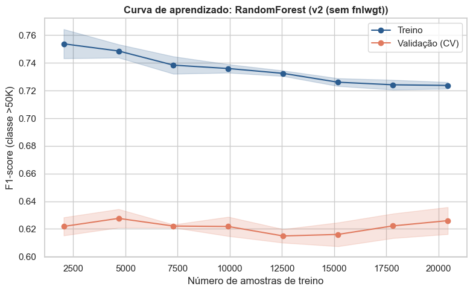

1. Seleção e implementação dos modelos¶
1.0 Pipeline de pré-processamento (v1 = o da APS1)¶
Mesmas decisões da APS1: fnlwgt com log1p + padronização; age e education.num padronizadas; categóricas com imputação pela categoria explícita "Missing" e one-hot (handle_unknown="ignore"). O pré-processador é colocado dentro do Pipeline com o modelo, assim, na validação cruzada, ele é re-ajustado só com o fold de treino (sem data leakage).
Ver código
cat_features = ["workclass", "marital.status", "occupation", "relationship", "race", "sex", "native.country"]
def build_preprocessor(usar_fnlwgt=True):
# Constrói o pré-processador. usar_fnlwgt=False gera a variante v2 (Seção 1.3).
fnlwgt_pipe = Pipeline([
("log", FunctionTransformer(np.log1p, feature_names_out="one-to-one")),
("scaler", StandardScaler()),
])
cat_pipe = Pipeline([
("imputer", SimpleImputer(strategy="constant", fill_value="Missing")),
("onehot", OneHotEncoder(handle_unknown="ignore")),
])
transformers = [("num", Pipeline([("scaler", StandardScaler())]), ["age", "education.num"]),
("cat", cat_pipe, cat_features)]
if usar_fnlwgt:
transformers.insert(0, ("fnlwgt", fnlwgt_pipe, ["fnlwgt"]))
return ColumnTransformer(transformers)
preprocessor_v1 = build_preprocessor(usar_fnlwgt=True)
preprocessor_v1
Estrutura do pré-processador (v1)
ColumnTransformer(transformers=[('fnlwgt',
Pipeline(steps=[('log',
FunctionTransformer(feature_names_out='one-to-one',
func=<ufunc 'log1p'>)),
('scaler', StandardScaler())]),
['fnlwgt']),
('num',
Pipeline(steps=[('scaler', StandardScaler())]),
['age', 'education.num']),
('cat',
Pipeline(steps=[('imputer',
SimpleImputer(fill_value='Missing',
strategy='constant')),
('onehot',
OneHotEncoder(handle_unknown='ignore'))]),
['workclass', 'marital.status', 'occupation',
'relationship', 'race', 'sex',
'native.country'])])
1.1 Três modelos distintos (hiperparâmetros padrão)¶
- Dummy (
most_frequent): sempre prevê a classe majoritária. É o piso: qualquer modelo real precisa superá-lo. - Regressão Logística (modelo linear com regularização L2 por padrão): coeficientes interpretáveis, rápida, e a regularização controla overfitting.
- Random Forest (ensemble de árvores): captura interações e não-linearidades (por exemplo,
estado civil × idade × escolaridade) sem precisar de escala.
Ver código
modelos_base = {
"Dummy": DummyClassifier(strategy="most_frequent"),
"LogReg": LogisticRegression(max_iter=2000),
"RandomForest": RandomForestClassifier(random_state=RANDOM_STATE, n_jobs=-1),
}
linhas = []
for nome, m in modelos_base.items():
pipe = Pipeline([("prep", preprocessor_v1), ("model", m)])
s = cross_val_score(pipe, X_train_proc, y_tr, cv=cv, scoring=SCORING)
linhas.append({"Modelo": nome, "F1 (média CV)": s.mean(), "Desvio": s.std()})
tabela_base = pd.DataFrame(linhas).round(4)
tabela_base
| Modelo | F1 (média CV) | Desvio | |
|---|---|---|---|
| 0 | Dummy | 0.0000 | 0.0000 |
| 1 | LogReg | 0.6179 | 0.0075 |
| 2 | RandomForest | 0.6052 | 0.0057 |
Análise:
- Dummy: F1 = 0 em todos os folds, pois sempre prevê
<=50Ke nunca acerta um>50K. Sua accuracy seria ≈ 0,76 (proporção da classe majoritária), o que reforça por que a accuracy não serve como métrica aqui. - LogReg e RandomForest: desempenhos próximos (F1 = 0,6179 vs. 0,6052); ambos superam o Dummy com folga e variam pouco entre folds (σ ≈ 0,006–0,008). Com diferença de ~1 desvio-padrão, não se pode afirmar superioridade de um dos dois sem um teste pareado (feito na Seção 1.3).
1.2 Seleção de hiperparâmetros¶
- Regressão Logística →
GridSearchCV(espaço pequeno):C(inverso da força da regularização; menorCsignifica mais regularização) epenalty(L1 zera coeficientes, L2 os encolhe). - Random Forest →
RandomizedSearchCV(espaço maior, amostrado):n_estimators,max_depth,min_samples_leafemax_features. Limitar a profundidade e exigir mais amostras por folha reduz o overfitting.
Ver código
def make_search(kind, preprocessor):
# Cria a busca de hiperparâmetros para 'LogReg' ou 'RandomForest' com o pré-processador dado.
if kind == "LogReg":
pipe = Pipeline([("prep", preprocessor),
("model", LogisticRegression(solver="liblinear", max_iter=2000))])
grid = {"model__C": [0.01, 0.1, 1, 10, 100], "model__penalty": ["l1", "l2"]}
return GridSearchCV(pipe, grid, cv=cv, scoring=SCORING, n_jobs=-1)
pipe = Pipeline([("prep", preprocessor),
("model", RandomForestClassifier(random_state=RANDOM_STATE, n_jobs=-1))])
dist = {"model__n_estimators": [100, 200, 300],
"model__max_depth": [5, 8, 12, 20, None],
"model__min_samples_leaf": [1, 3, 5, 10, 20],
"model__max_features": ["sqrt", "log2", 0.3]}
return RandomizedSearchCV(pipe, dist, n_iter=12, cv=cv, scoring=SCORING,
n_jobs=-1, random_state=RANDOM_STATE)
gs_lr = make_search("LogReg", preprocessor_v1).fit(X_train_proc, y_tr)
rs_rf = make_search("RandomForest", preprocessor_v1).fit(X_train_proc, y_tr)
print("LogReg | melhor F1 (CV):", round(gs_lr.best_score_, 4), "|", gs_lr.best_params_)
print("RandomForest| melhor F1 (CV):", round(rs_rf.best_score_, 4), "|", rs_rf.best_params_)
LogReg | melhor F1 (CV): 0.6184 | {'model__C': 1, 'model__penalty': 'l2'}
RandomForest| melhor F1 (CV): 0.6252 | {'model__n_estimators': 200, 'model__min_samples_leaf': 3, 'model__max_features': 0.3, 'model__max_depth': None}
Ver código
resultados_v1 = {"LogReg": gs_lr, "RandomForest": rs_rf}
melhor_nome = max(resultados_v1, key=lambda k: resultados_v1[k].best_score_)
tabela_1 = pd.concat([
tabela_base.set_index("Modelo")["F1 (média CV)"].rename("Padrão"),
pd.Series({"Dummy": tabela_base.loc[0, "F1 (média CV)"],
"LogReg": gs_lr.best_score_, "RandomForest": rs_rf.best_score_}, name="Otimizado"),
], axis=1).round(4)
display(tabela_1)
print("Melhor modelo até aqui:", melhor_nome)
| Padrão | Otimizado | |
|---|---|---|
| Dummy | 0.0000 | 0.0000 |
| LogReg | 0.6179 | 0.6184 |
| RandomForest | 0.6052 | 0.6252 |
Melhor modelo até aqui: RandomForest
Ver código
# Melhores configurações de cada busca: mostra se há um platô de desempenho (robustez da escolha)
def top_configs(busca, n=5):
r = pd.DataFrame(busca.cv_results_)
cols = [c for c in r.columns if c.startswith("param_")] + ["mean_test_score", "std_test_score", "rank_test_score"]
return r.sort_values("rank_test_score")[cols].head(n).round(4)
print("LogReg (GridSearchCV) - top 5"); display(top_configs(gs_lr))
print("RandomForest (RandomizedSearchCV) - top 5"); display(top_configs(rs_rf))
LogReg (GridSearchCV) - top 5
| param_model__C | param_model__penalty | mean_test_score | std_test_score | rank_test_score | |
|---|---|---|---|---|---|
| 5 | 1 | l2 | 0.6184 | 0.0071 | 1 |
| 4 | 1 | l1 | 0.6173 | 0.0074 | 2 |
| 6 | 10 | l1 | 0.6173 | 0.0074 | 3 |
| 7 | 10 | l2 | 0.6173 | 0.0074 | 4 |
| 8 | 100 | l1 | 0.6172 | 0.0073 | 5 |
RandomForest (RandomizedSearchCV) - top 5
| param_model__n_estimators | param_model__min_samples_leaf | param_model__max_features | param_model__max_depth | mean_test_score | std_test_score | rank_test_score | |
|---|---|---|---|---|---|---|---|
| 5 | 200 | 3 | 0.3 | None | 0.6252 | 0.0057 | 1 |
| 9 | 200 | 10 | 0.3 | 20 | 0.6219 | 0.0032 | 2 |
| 8 | 200 | 20 | 0.3 | 20 | 0.6186 | 0.0061 | 3 |
| 2 | 100 | 1 | 0.3 | 12 | 0.6156 | 0.0114 | 4 |
| 1 | 200 | 3 | sqrt | None | 0.6120 | 0.0047 | 5 |
Análise do ajuste de hiperparâmetros (Padrão vs. Otimizado):
- Dummy: permanece em F1 = 0; é apenas o piso de comparação.
- Regressão Logística (GridSearchCV, 10 combinações): 0,6179 → 0,6184 (+0,05 p.p.). Os melhores
C = 1epenalty = 'l2'coincidem com o padrão; a pequena diferença vem da troca de solver (lbfgs→liblinear). Ganho desprezível: com estas features o modelo linear já está perto do seu teto. - Random Forest (RandomizedSearchCV, 12 de 225 combinações): 0,6052 → 0,6252 (+2,0 p.p.), ganho bem maior que o desvio entre folds (≈ 0,006), portanto provavelmente real. Melhor configuração:
n_estimators=200,max_depth=None,min_samples_leaf=3,max_features=0.3. - Cautela na interpretação: como a busca amostrou só 12 combinações, não é possível atribuir o ganho a um único hiperparâmetro. Leitura plausível (hipótese, não resultado isolado):
min_samples_leaf=3reduz a variância das folhas;max_features=0.3(≈ 26 colunas, contra ≈ 9 dosqrtnum espaço de ~89 colunas após o one-hot) aumenta a diversidade entre as árvores;max_depth=Nonedeixa capturar interações. A tabela das melhores configurações (célula acima) permite checar a robustez: se configurações vizinhas têm F1 parecido, o resultado não depende de um ajuste fino. - Comparação entre modelos: a RF otimizada (0,6252) fica 0,7 p.p. acima da LogReg (0,6184), cerca de 1 desvio-padrão. Adotamos a RF como melhor modelo por ter o maior F1 médio e maior capacidade de capturar não-linearidades, mas a vantagem é modesta; a Seção 1.3 a verifica de forma pareada.
1.3 Mudança no pipeline: remover fnlwgt (pipeline v2)¶
Proposta: retirar fnlwgt do conjunto de features.
Justificativa: baseado na EDA da APS1, vimos que fnlwgt é um peso amostral do censo (quantas pessoas da população cada linha representa), não uma característica do indivíduo. Na análise bivariada (fnlwgt × workclass) ele pouco diferenciou os grupos, e na análise numérica não teve relação com income. Mantê-lo pode acrescentar ruído e dar ao modelo uma variável sem sentido causal ou preditivo.
Hipótese: o desempenho se mantém ou melhora levemente, com um modelo mais simples. Para isolar o efeito, mudamos somente isso e refazemos a seleção de hiperparâmetros do melhor modelo, com a mesma métrica e a mesma validação.
Ver código
preprocessor_v2 = build_preprocessor(usar_fnlwgt=False)
busca_v2 = make_search(melhor_nome, preprocessor_v2).fit(X_train_proc, y_tr)
comparacao = pd.DataFrame({
"Pipeline": ["v1 (com fnlwgt)", "v2 (sem fnlwgt)"],
"Modelo": [melhor_nome, melhor_nome],
"F1 (média CV)": [resultados_v1[melhor_nome].best_score_, busca_v2.best_score_],
}).round(4)
display(comparacao)
print("Hiperparâmetros v2:", busca_v2.best_params_)
| Pipeline | Modelo | F1 (média CV) | |
|---|---|---|---|
| 0 | v1 (com fnlwgt) | RandomForest | 0.6252 |
| 1 | v2 (sem fnlwgt) | RandomForest | 0.6262 |
Hiperparâmetros v2: {'model__n_estimators': 200, 'model__min_samples_leaf': 3, 'model__max_features': 0.3, 'model__max_depth': None}
Ver código
# Escolha do modelo final: só adotamos a v2 se ela de fato melhorou o F1 de validação
if busca_v2.best_score_ > resultados_v1[melhor_nome].best_score_:
busca_final, versao_final = busca_v2, "v2 (sem fnlwgt)"
else:
busca_final, versao_final = resultados_v1[melhor_nome], "v1 (com fnlwgt)"
modelo_final = busca_final.best_estimator_
print(f"Modelo final: {melhor_nome} | pipeline {versao_final} | F1 CV = {busca_final.best_score_:.4f}")
Modelo final: RandomForest | pipeline v2 (sem fnlwgt) | F1 CV = 0.6262
Ver código
# Comparação pareada fold a fold (mesmos folds `cv`): a diferença é maior que o ruído entre folds?
def comparar(nome_a, est_a, nome_b, est_b):
sa = cross_val_score(est_a, X_train_proc, y_tr, cv=cv, scoring=SCORING)
sb = cross_val_score(est_b, X_train_proc, y_tr, cv=cv, scoring=SCORING)
d = sb - sa
print(f"{nome_b} - {nome_a}: diferença média = {d.mean():+.4f} | desvio das diferenças = {d.std():.4f} "
f"| folds em que {nome_b} >= {nome_a}: {(d >= 0).sum()}/{len(d)}")
print(" ->", "diferença dentro do ruído entre folds (modelos equivalentes)" if abs(d.mean()) < d.std()
else "diferença maior que o ruído entre folds")
return pd.DataFrame({nome_a: sa, nome_b: sb}).round(4)
# (a) Efeito da mudança de pipeline: v1 vs v2 (RF otimizada)
display(comparar("RF v1", resultados_v1[melhor_nome].best_estimator_, "RF v2", busca_v2.best_estimator_))
# (b) Modelo: LogReg (v1) vs RF (v1)
display(comparar("LogReg v1", gs_lr.best_estimator_, "RF v1", rs_rf.best_estimator_))
RF v2 - RF v1: diferença média = +0.0010 | desvio das diferenças = 0.0071 | folds em que RF v2 >= RF v1: 1/5
-> diferença dentro do ruído entre folds (modelos equivalentes)
| RF v1 | RF v2 | |
|---|---|---|
| 0 | 0.6274 | 0.6274 |
| 1 | 0.6236 | 0.6183 |
| 2 | 0.6148 | 0.6123 |
| 3 | 0.6286 | 0.6434 |
| 4 | 0.6313 | 0.6296 |
RF v1 - LogReg v1: diferença média = +0.0067 | desvio das diferenças = 0.0054 | folds em que RF v1 >= LogReg v1: 4/5
-> diferença maior que o ruído entre folds
| LogReg v1 | RF v1 | |
|---|---|---|
| 0 | 0.6137 | 0.6274 |
| 1 | 0.6251 | 0.6236 |
| 2 | 0.6085 | 0.6148 |
| 3 | 0.6172 | 0.6286 |
| 4 | 0.6276 | 0.6313 |
Análise do impacto da mudança no pipeline (v1 vs. v2):
- Resultado: v1 (com
fnlwgt) F1 = 0,6252; v2 (semfnlwgt) F1 = 0,6262, diferença de +0,001. A mesma configuração de hiperparâmetros foi selecionada nas duas buscas. - Significância: a comparação pareada fold a fold (célula acima) compara a diferença média com o desvio das diferenças. Como o efeito observado (0,001) é muito menor que a variação entre folds (σ ≈ 0,006), a leitura correta é "sem perda de desempenho", e não "melhora".
- Decisão: adotamos a v2 por parcimônia: desempenho equivalente com um pré-processamento mais simples (sem
log1p+ padronização) e sem uma variável que não descreve o indivíduo. Isso é coerente com a EDA da APS1:fnlwgté um peso amostral do censo, sem relação comincomenem poder de separar grupos. - Consistência com a Seção 3.2: o
fnlwgtaparece como 3ª feature mais "importante" na Random Forest v1 e, ainda assim, removê-lo não prejudica o modelo. Isso é o que se espera do viés conhecido da importância por impureza para variáveis contínuas de alta cardinalidade (Strobl et al., 2007). - Comparação LogReg vs. RF (pareada): a mesma célula verifica se a vantagem da RF supera o ruído entre folds.
1.4 Curvas de aprendizado do melhor modelo¶
Mostram o F1 de treino e de validação conforme o tamanho do conjunto de treino aumenta. Leitura:
- gap grande entre treino e validação → overfitting (variância alta);
- ambas baixas e próximas → underfitting (viés alto);
- validação já estabilizada → mais dados provavelmente trariam pouco ganho.
Ver código
tamanhos, tr_sc, va_sc = learning_curve(
modelo_final, X_train_proc, y_tr, cv=cv, scoring=SCORING,
train_sizes=np.linspace(0.1, 1.0, 8), n_jobs=-1, random_state=RANDOM_STATE
)
plt.figure(figsize=(8, 5))
for sc, nome, cor in [(tr_sc, "Treino", "#2b5c8f"), (va_sc, "Validação (CV)", "#e07a5f")]:
plt.plot(tamanhos, sc.mean(axis=1), "o-", label=nome, color=cor)
plt.fill_between(tamanhos, sc.mean(axis=1) - sc.std(axis=1),
sc.mean(axis=1) + sc.std(axis=1), alpha=0.2, color=cor)
plt.title(f"Curva de aprendizado: {melhor_nome} ({versao_final})", fontweight="bold")
plt.xlabel("Número de amostras de treino")
plt.ylabel("F1-score (classe >50K)")
plt.legend()
plt.tight_layout()
plt.show()

Análise da curva de aprendizado (Random Forest v2):
- Variância: gap de ≈ 10 p.p. entre treino (≈ 0,72–0,75) e validação (≈ 0,61–0,63), que se mantém em todos os tamanhos. Indica sobreajuste moderado, esperado com
max_depth=None; omin_samples_leaf=3o mantém controlado. A curva de treino cai levemente conforme há mais dados (menos memorização), mas a de validação não sobe. - Saturação: o F1 de validação é praticamente plano desde as menores amostras (~2.000) até ~20.000, oscilando dentro da faixa de ruído (±0,01). Mais dados do mesmo tipo trariam pouco ganho: o gargalo é a informação disponível nas features, não o volume.
- Direções que atacariam o gargalo: features mais informativas, outros ensembles (Gradient Boosting) e ajuste do limiar de decisão para reequilibrar precision e recall.